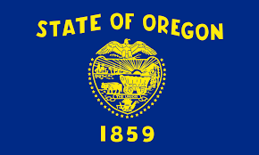

Oregon
Oregon (/ˈɒrɪɡən/ (About this soundlisten) ORR-ih-gən)[7] is a state in the Pacific Northwest region on the West Coast of the United States. The Columbia River delineates much of Oregon's northern boundary h Washington, while the Snake River delineates much of its eastern boundary with Idaho. The parallel 42° north delineates the southern boundary with California and Nevada. Oregon is one of only three states of the contiguous United States to have a coastline on the Pacific Ocean. Oregon was inhabited by many indigenous tribes before Western traders, explorers, and settlers arrived. An autonomous government was formed in the Oregon Country in 1843 before the Oregon Territory was created in 1848. Oregon became the 33rd state on February 14, 1859. Today, at 98,000 square miles (250,000 km2), Oregon is the ninth largest and, with a population of 4 million, 27th most populous U.S. state. The capital, Salem, is the second most populous city in Oregon, with 164,549 residents. Portland, with 632,309 residents, the most populous and ranks as the 26th most populous city in the United States. The Portland metropolitan area, which also includes the city of Vancouver, Washington, to the north, ranks the 23rd largest metro area in the nation, with a population of 2,389,228. Oregon is one of the most geographically diverse states in the U.S.,[8] marked by volcanoes, abundant bodies of water, dense evergreen and mixed forests, as well as high deserts and semi-arid shrublands. At 11,249 feet (3,429 m), Mount Hood, a stratovolcano, is the state's highest point. Oregon's only national park, Crater Lake National Park, comprises the caldera surrounding Crater Lake, the deepest lake in the United States. The state is also home to the single largest organism in the world, Armillaria ostoyae, a fungus that runs beneath 2,200 acres (8.9 km2) of the Malheur National Forest.[9] Because of its diverse landscapes and waterways, Oregon's economy is largely powered by various forms of agriculture, fishing, and hydroelectric power. Oregon is also the top timber producer of the contiguous United States, and the timber industry dominated the state's economy in the 20th century.[10] Technology is another one of Oregon's major economic forces, beginning in the 1970s with the establishment of the Silicon Forest and the expansion of Tektronix and Intel. Sportswear company Nike, Inc., headquartered in Beaverton, is the state's largest public corporation with an annual revenue of $30.6 billion.[11] Like its northern neighbor Washington, Oregon is one of the most socially progressive states in the country. Same-sex marriage in Oregon was recognized in 2013 before its full legalization in 2015, cannabis is legal for recreational and medicinal use in the state, and assisted suicide is also permitted by law in Oregon.